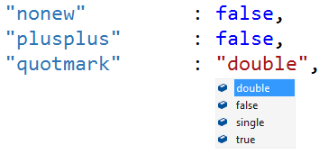
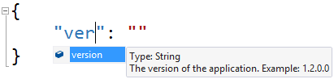

Auto completion
 In supported JSON editors, schema files can offer auto-completion and validation to make sure your JSON document is correct.
See a list of editors, validators and other software supporting JSON schemas.
Tooltips
 When a JSON editor supports schemas, tooltips can help inform the user about the various properties and values.
Public API
This website exposes an API with a list of all available JSON schemas. You can use the API for auto-discoverability of new schema files and add the support directly to JSON editors.
Open source
All the JSON schema files are open source and under the Apache 2.0 license.
It's completely free.
The schema files are all hosted on
GitHub.